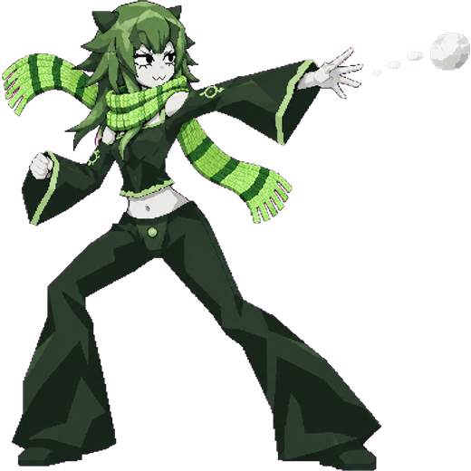

Снежки
Возьмите снег мышкой и покрутите курсором по кругу — комок скатается в шар. Над сугробом шар растёт без ограничений, но чем он больше, тем тяжелее его тянуть. Брошенный снежок разбивается об окно и оставляет след, который сползает и тает.
Мы в соцсетях
Новости Snowie, ролики с Темс и Сузу и всё, что мы делаем дальше.